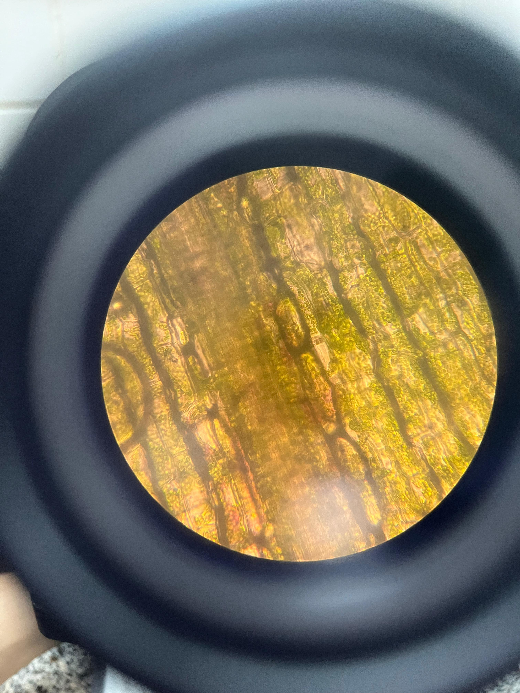
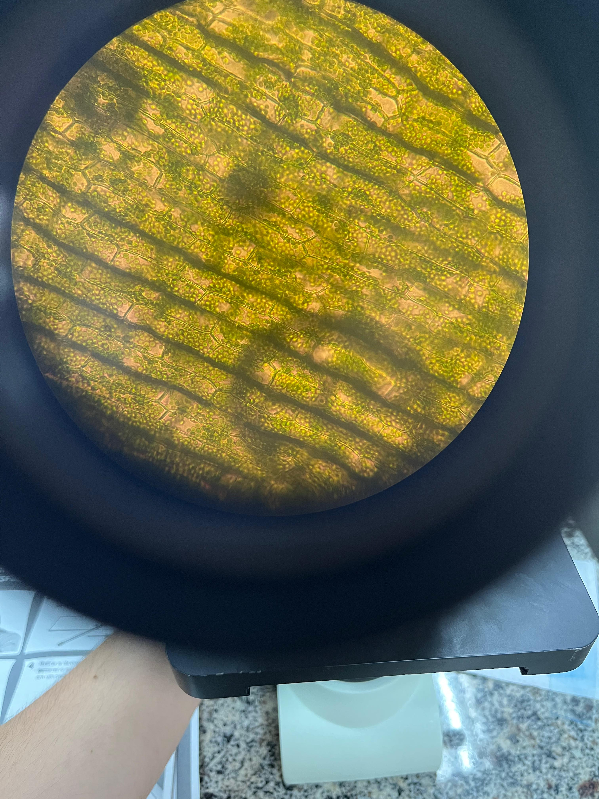
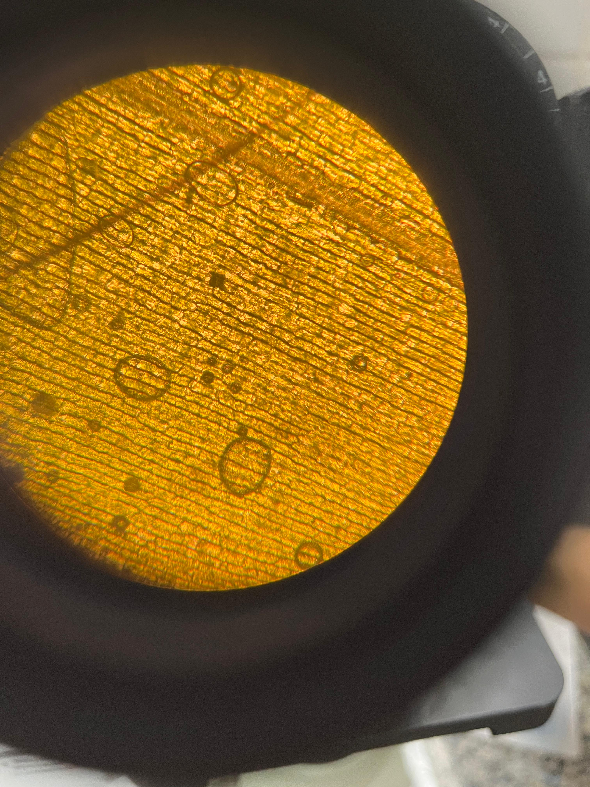

METABOLISMO ENERGÉTICO E FERMENTAÇÃO
A terceira aula do projeto IFBIO ocorreu no dia 22/11/2024, das 08:00 às 10:00, iniciando na sala, é posteriormente no laboratório de biologia. Os assuntos abordados foram fotossíntese é metabolismo energético, onde os voluntários do projeto conduziram a aula. Após o momento em sala de aula, foi realizado o lanche coletivo, entre os participantes do projeto é seus voluntários. Posteriormente, a coordenadora juntamente com a bolsista é os voluntários, realizaram as atividades práticas, sobre o assunto. As práticas executadas foram: extração da clorofila; observação das estruturas moleculares da Elodea.
  